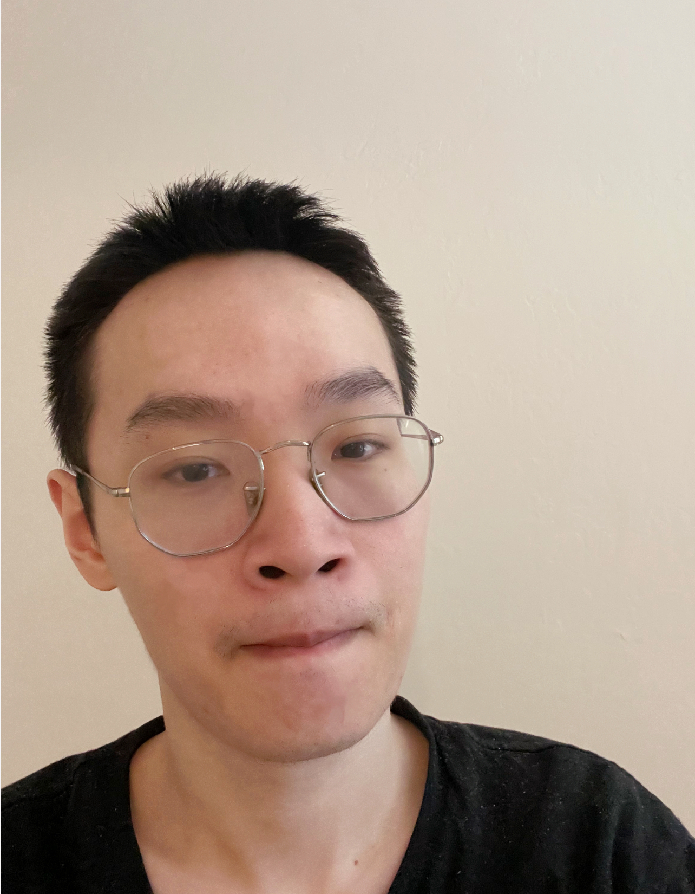

Shuowei Li
Research Interest: LLM Reasoning, Agents, and Reinforcement Learning
Looking for research internships in Fall 2025 and PhD positions for Fall 2026
About Me
I received my bachelor's degree in Data Science from the University of California, Berkeley and am currently pursuing a Master of Science in Computer Science at Santa Clara University. I am co-advised by Prof. Yi Fang and Prof. Oana Ignat.
News
Joined TesslateAI as an AI Research Scientist Intern, focusing on SFT/RL training for UI generation.
Visiting Scholar at MATS (ML Alignment & Theory Scholars) Program. Engaging with leading researchers in AI alignment, attending cutting-edge talks and symposiums on machine learning theory, safety, and alignment.
Research
How Large Language Models Balance Internal Knowledge with User and Document Assertions
Abstract submitted to BayLearn 2025
Full paper coming very soon
Get In Touch
Feel free to reach out for collaborations!